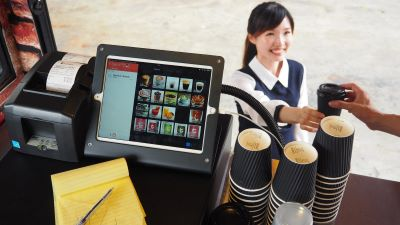

Cashier
Key Responsibilities:
1. Managing Transactions
- Taking Orders: Accurately records customer orders, ensuring special requests or dietary preferences are noted.
- Processing Payments: Handles cash, credit, or digital payments efficiently and securely.
- Providing Change/Receipts: Ensures transactions are completed quickly to avoid delays in service.
2. Enhancing Customer Experience
- Greeting Customers: Welcomes guests warmly to make them feel valued.
- Answering Questions: Provides details about the menu, specials, or ingredients.
- Handling Complaints: Resolves minor issues on the spot to maintain customer satisfaction.
3. Supporting Promotions and Upselling
- Suggestive Selling: Recommends add-ons or combos to boost sales.
- Promotions: Explains any ongoing offers or new menu items to customers.
4. Maintaining Order and Organization
- Line Management: Ensures a steady and organized queue during busy hours.
- Order Coordination: Works closely with kitchen staff to confirm orders are prepared correctly.

Impact on the Food Truck:
- Customer Retention: A helpful and engaging cashier creates loyal customers who return for the great service.
- Efficient Operations: Streamlined order taking and payment processing reduce waiting times.
- Increased Sales: Effective upselling and promoting menu items help boost overall revenue.
- Brand Reputation: Exceptional service reflects positively on the food truck brand, encouraging word-of-mouth recommendations.
Salary: RM1700/month